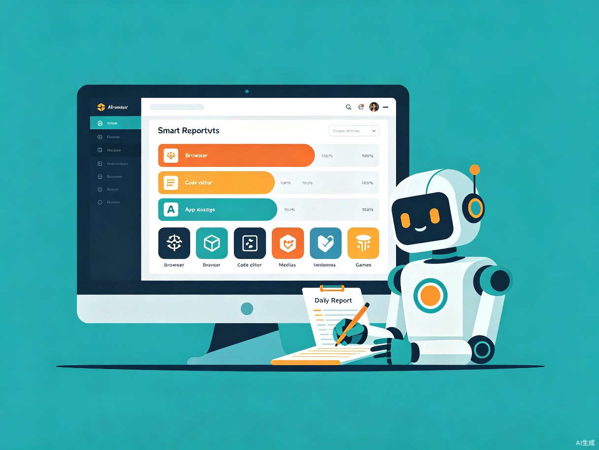
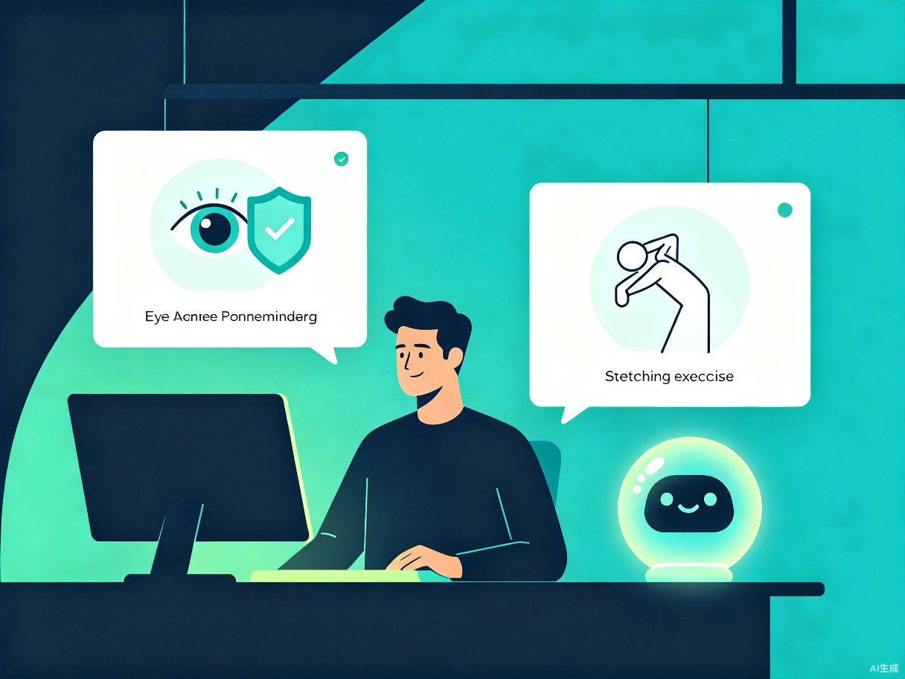
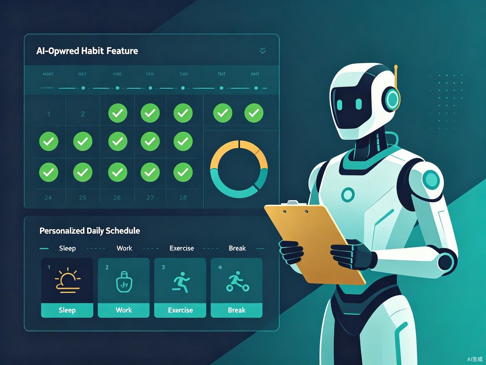

项目背景
在数字化时代，电脑已成为工作与生活不可分割的一部分。尤其是 Windows 10 桌面用户群体庞大，长时间、高频次使用电脑已成为常态。然而，现有的健康提醒工具功能单一、缺乏智能，无法真正帮助用户建立健康的数字生活习惯。
我们观察到，当前市面上常见的电脑使用管理工具主要停留在"计时器 + 定时弹窗"的阶段，缺乏对用户实际使用场景的深度理解和个性化关怀。AI 技术的成熟为我们带来了全新的可能性 — 让电脑不仅能记录我们的使用行为，更能理解我们的工作节奏、判断健康风险、并主动提供有温度的个性化建议。
HealthPilot AI 正是在这一背景下诞生的项目。我们希望利用 AI 技术构建一个真正"懂用户"的桌面健康助手，从被动提醒进化为主动关怀，帮助数亿 Windows 10 用户建立更健康的数字生活习惯。
痛点分析
通过调研我们发现，当前用户在电脑使用健康管理方面面临以下核心痛点：
💪 用眼过度无处提醒
长时间连续盯着屏幕，缺乏智能护眼提醒。传统工具仅按固定时间弹窗，无法识别用户是否正在专注工作或已处于疲劳状态。
💩 久坐不动危害健康
忘记起身活动已成为常态。固定间隔的提醒往往在不合适的时机弹出（如会议中、深度编码时），用户逐渐忽略甚至关闭通知。
📱 娱乐时间难以自控
刷短视频、浏览社交媒体等"被动娱乐"占用大量时间，用户往往无意识地消耗数小时，事后懊悔却缺乏有效约束。
📊 缺乏使用洞察
用户不清楚自己的时间到底花在了哪里。现有工具仅提供原始数据统计，缺少 AI 驱动的深度分析和可操作的建议。
😴 作息不规律
熬夜使用电脑严重影响睡眠质量和身体健康，而传统工具缺乏从长期数据中发现作息问题并主动引导改善的能力。
🤖 健康建议千篇一律
通用化的健康提示无法贴合个人实际情况。不同职业、不同使用习惯的用户需要完全不同的健康干预方案。
产品愿景
HealthPilot AI 的核心愿景是：让 AI 成为用户桌面上最贴心的健康伙伴，不是冰冷的监督者，而是有温度的引导者。我们致力于打造一款集软件使用追踪、智能健康提醒、个性化习惯养成于一体的 Win10 原生健康助手。
感知
精确追踪每一款软件的使用行为，构建完整的用户数字生活画像
思考
AI 实时分析使用模式，识别健康风险并理解用户当前的工作状态
关怀
在最适合的时机，用最恰当的方式提供个性化的健康建议和引导
核心功能详解
📊 功能一：软件使用追踪与智能评论
HealthPilot AI 在后台静默运行，自动记录 Win10 环境下每个应用程序的使用时长、使用频次和切换模式。基于这些数据，AI 引擎会生成每日使用报告，并对用户的使用行为进行智能评论。
- 精确追踪：利用 Win10 API 获取前台窗口信息，按秒级精度记录软件使用数据
- 智能分类：自动将软件归类为"效率工具"、"社交媒体"、"娱乐游戏"、"学习阅读"等类别
- 每日报告：AI 生成图文并茂的每日使用总结，包含时间分布、效率评分、对比趋势
- 个性化评论：AI 针对用户当天的使用行为给出具体的评语和建议，如"今天效率很高！编码 4 小时，建议做一次眼部放松"
- 周报 / 月报：自动汇总长期使用趋势，帮助用户直观了解自己的数字生活习惯变化
- 隐私优先：所有数据仅存储在本地，不上传任何内容到云端，AI 分析完全在端侧完成
🤖 AI 赋能亮点
采用本地轻量级 LLM 进行自然语言报告生成，让报告读起来像"朋友写的信"而非冰冷的数据报表。AI 会结合用户历史数据，识别异常使用模式（如突然增加的游戏时间），并给出有针对性的建议。

💚 功能二：AI 智能健康提醒
区别于传统定时弹窗的粗暴方式，HealthPilot AI 结合多维上下文信息智能判断提醒时机，确保在用户最需要休息的时候给出最恰当的关怀。
- 工作状态感知：通过分析键盘/鼠标活动频率、窗口切换模式、时间段等数据，AI 实时判断用户当前处于"深度专注"、"正常工作"、"休闲浏览"还是"已疲劳"状态
- 智能护眼提醒：当检测到用户连续用眼超过安全阈值且处于可中断状态时，温和弹出护眼提醒，并展示 20-20-20 法则引导动画
- 久坐提醒：综合使用时长和活动状态，在用户久坐不动时提醒起身，并推送 AI 生成的个性化微运动方案
- AI 放松建议：根据用户当前的工作强度和疲劳程度，AI 动态生成定制化的放松建议，如颈部拉伸、深呼吸练习、眼部放松操等
- 智能免打扰：当检测到用户正在进行视频会议、全屏演示或高频输入（如写代码）时，自动延迟提醒，避免打断重要工作
- 渐进式提醒：从桌面小气泡到系统通知再到语音提醒，分阶段升级提醒方式
🤖 AI 赋能亮点
构建用户行为模型（User Behavior Model），通过时序分析预测疲劳拐点。结合上下文感知（Context-Awareness），AI 能够理解"用户正在写一段重要代码"和"用户在刷短视频"的区别，给出完全不同的干预策略。

🌱 功能三：AI 驱动的健康习惯养成
基于用户长期的使用数据，HealthPilot AI 不仅记录和提醒，更帮助用户主动建立和维持健康的数字生活节奏。
- 个性化作息计划：AI 根据用户的工作时间、习惯偏好和健康数据，自动生成个性化的每日作息方案
- 习惯打卡系统：设置健康目标（如每 50 分钟起身一次、每日屏幕外时间 ≥ 30 分钟），以游戏化方式追踪完成情况
- 渐进式目标：AI 不会一次性要求用户改变所有习惯，而是根据用户的实际情况制定渐进式改善计划
- 周目标挑战：每周 AI 设定一个小挑战（如"本周将娱乐时间减少 20%"），完成后给予正向反馈
- 成就系统：连续完成目标获得徽章和等级提升，增加长期使用动力
- 数据看板：可视化展示健康指标变化趋势，让用户清晰看到自己的进步
🤖 AI 赋能亮点
采用强化学习（Reinforcement Learning）算法，根据用户对提醒和目标的响应反馈持续优化干预策略。AI 会学习"哪种提醒方式对这位用户最有效"、"什么时间段用户最容易接受建议"，实现真正的千人千面。

AI 技术赋能架构
HealthPilot AI 的核心竞争力在于将多项 AI 技术深度融合到产品体验中，让每一项功能都具备"理解"和"适应"的能力。
核心技术栈
flowchart TB
subgraph 数据采集层["📊 数据采集层"]
A[Win32 API
前台窗口追踪]
B[输入设备监控
键盘/鼠标活动]
C[系统事件监听
锁屏/休眠/切换]
end
subgraph 数据处理层["⚙ 数据处理层"]
D[实时数据清洗
与分类引擎]
E[行为时序
特征提取]
F[本地 SQLite
数据存储]
end
subgraph AI引擎层["🤖 AI 引擎层"]
G[用户行为模型
工作状态识别]
H[疲劳预测模型
风险等级评估]
I[轻量级 LLM
自然语言生成]
J[强化学习引擎
策略自适应优化]
end
subgraph 应用呈现层["💻 应用呈现层"]
K[系统托盘
常驻通知]
L[每日/周报
智能评论面板]
M[健康看板
数据可视化]
N[习惯养成
游戏化追踪]
end
A --> D
B --> D
C --> D
D --> E
E --> F
F --> G
F --> H
G --> I
G --> J
H --> J
I --> L
J --> K
H --> K
G --> M
G --> N
style 数据采集层 fill:#111827,stroke:#253040,color:#f0f4f8
style 数据处理层 fill:#111827,stroke:#253040,color:#f0f4f8
style AI引擎层 fill:#0a1f1a,stroke:#00d4aa,color:#00d4aa
style 应用呈现层 fill:#111827,stroke:#253040,color:#f0f4f8
关键 AI 能力详解
用户行为建模
基于 LSTM + Transformer 混合架构，对用户的窗口切换序列、输入活动模式进行时序建模，实时输出"专注度"、"疲劳度"、"娱乐倾向"等维度评分。
上下文感知决策
综合时间段、应用类型、用户历史响应率等上下文特征，通过多任务学习模型决定"是否提醒"、"何时提醒"、"以何种方式提醒"。
NLP 报告生成
部署本地量化 LLM（如 Phi-3-mini），将结构化使用数据转化为自然语言评论。通过 Prompt Engineering 实现风格可控、个性化、有温度的报告生成。
自适应策略引擎
引入强化学习，将用户反馈（忽略/接受/延迟提醒）作为 Reward Signal，持续优化提醒策略，使系统越用越懂用户。
端侧隐私计算
所有 AI 推理均在本地完成，支持 ONNX Runtime 加速。用户数据零上传，保障隐私安全。通过模型量化和剪枝，确保低资源占用。
轻量高效部署
后台常驻内存控制在 150MB 以内，CPU 占用率 < 2%。通过模型蒸馏和定时推理策略，兼顾 AI 能力与系统性能。
竞争优势分析
我们将 HealthPilot AI 与当前市面上常见的同类工具进行了对比分析：
| 对比维度 | 传统定时提醒工具 | 屏幕时间统计工具 | HealthPilot AI |
|---|---|---|---|
| 使用行为追踪 | 无 | 基础统计 | AI 深度分析 |
| 提醒方式 | 固定定时弹窗 | 无提醒 | AI 智能判断时机 |
| 工作状态感知 | 无 | 无 | 实时多维感知 |
| 免打扰机制 | 手动设置 | 不适用 | AI 自动识别 |
| 健康报告 | 无 | 数据图表 | AI 自然语言评论 |
| 个性化程度 | 无 | 低 | 强化学习自适应 |
| 习惯养成 | 无 | 无 | 游戏化目标追踪 |
| 数据隐私 | 本地 | 部分上传 | 端侧 AI 全本地 |
未来规划
HealthPilot AI 将分三个阶段逐步演进，从核心功能打磨到生态拓展：
阶段一：核心 MVPV1.0 · 基础能力
完成基础软件追踪引擎、本地数据存储、定时健康提醒、每日使用报告生成。验证核心价值假设，收集种子用户反馈。重点关注追踪精度和系统资源占用优化。
阶段二：AI 深度赋能V2.0 · 智能进化
引入本地 LLM 实现自然语言报告，部署行为建模和疲劳预测模型，上线上下文感知的智能提醒系统，开放习惯养成模块。实现"千人千面"的个性化体验。
阶段三：生态拓展V3.0 · 开放生态
接入智能穿戴设备数据（心率、步数），开发健康数据开放 API，引入社区健康挑战和社交功能，探索与健康管理平台的深度整合。打造 Windows 健康生态的核心入口。
flowchart LR
subgraph V1["阶段一 · MVP"]
A1[基础追踪引擎]
A2[定时健康提醒]
A3[每日使用报告]
end
subgraph V2["阶段二 · AI 赋能"]
B1[本地 LLM 报告]
B2[行为建模引擎]
B3[智能提醒系统]
B4[习惯养成模块]
end
subgraph V3["阶段三 · 生态"]
C1[穿戴设备接入]
C2[开放 API]
C3[社区挑战]
C4[健康平台整合]
end
V1 -->|AI 升级| V2 -->|生态拓展| V3
style V1 fill:#111827,stroke:#00d4aa,color:#00d4aa
style V2 fill:#111827,stroke:#3b82f6,color:#3b82f6
style V3 fill:#111827,stroke:#ff6b4a,color:#ff6b4a
预期影响与社会价值
HealthPilot AI 不仅是一款工具软件，更承载着推动数字健康生活方式的社会使命：
改善用户健康
帮助用户减少 30% 以上的不必要屏幕时间，降低因久坐和用眼过度导致的健康风险
提升工作效率
通过智能报告和效率分析，帮助用户更清晰地了解时间分配，减少无效的数字分心
推广 AI 民主化
展示端侧 AI 在日常生活中的应用场景，降低 AI 技术的感知门槛，推动 AI 惠及更多人
树立隐私标杆
全本地化 AI 处理方案为行业树立隐私保护标杆，证明智能与隐私可以兼得
🎯 大赛参赛意义
本项目充分体现了 AI 创造力的核心理念：用 AI 技术解决真实的社会痛点，以技术创新提升人类生活质量。HealthPilot AI 将前沿的 LLM、强化学习、时序分析等 AI 技术有机融合，落地于用户每天都在使用的桌面场景中，既有技术深度，又有实用价值和社会影响力。
关于团队
我们的团队由热爱技术与健康的创造者组成，相信 AI 的力量可以让每个人的数字生活更健康、更高效。我们正在使用 TRAE 平台将创意变为现实。
项目正在积极开发中，我们期待通过 TRAE AI 创造力大赛的平台，让更多人看到这个想法的潜力，并获得宝贵的反馈和资源支持。